This article introduces Radiant, a binary-level concolic execution framework for Solana programs.
Introduction
Radiant is an advanced testing framework for Solana programs that leverages concolic execution, a hybrid approach combining concrete and symbolic execution.
Radiant models program input fields and account states as either concrete values or symbolic variables. Given a target code location, it uses symbolic execution to determine which input values enable execution paths that reach that location.
Motivation
Security auditors combine multiple techniques when analyzing smart contracts, ranging from manual code review to understand program logic, fuzzing to systematically test the code base, and formal verification for critical properties. Each technique has distinct strengths. Manual review leverages human insight and reasoning, fuzzing explores behavior empirically while formal methods provide mathematical rigor.
Radiant augments this toolkit with concolic execution, a technique that combines concrete execution with symbolic execution. But why concolic execution instead of purely symbolic execution?
Solana's architecture presents a unique challenge, programs are stateless and operate on accounts passed as input. A transaction can include dozens of accounts, each with arbitrary data and state. Making everything symbolic, can quickly become impractical. The high number of symbolic variables can overwhelm the constraint solver, and make analysis intractable.
Radiant's concolic approach solves this by starting with a concrete execution context representing a deployment with actual account data, balances, and program state. From this concrete baseline, one can selectively mark specific values as symbolic. Perhaps just the instruction parameters, or specific fields within an account's data. This selective symbolization keeps the analysis focused and tractable while still enabling targeted path exploration.
This approach is particularly powerful when combined with fuzzing. Fuzzers excel at exploring the program state space at scale but struggle to reach deep nested code paths fenced by conditional statements. Radiant addresses this by solving constraints on the symbolized values to generate precise inputs that reach specific code locations.
How it works
Understanding Radiant's approach requires first recognizing the limitations of traditional testing methods. Consider a typical testing scenario applied to given Solana program:
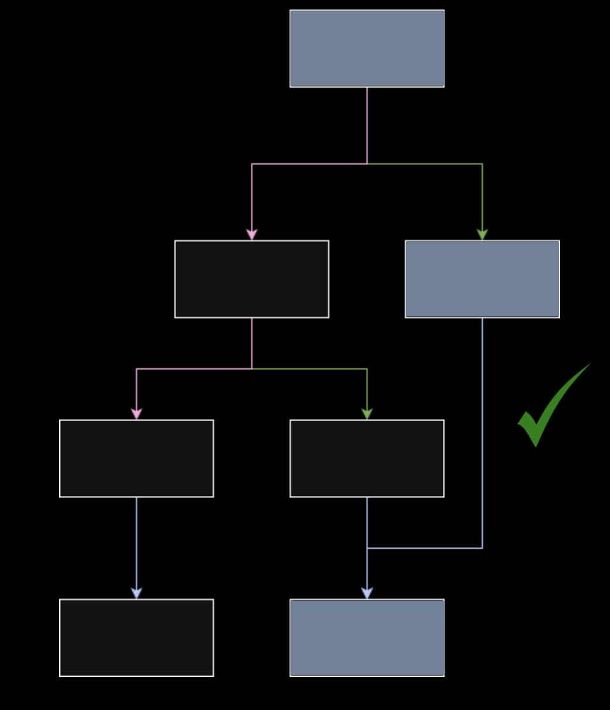
The control flow graph (CFG) above shows the execution paths taken when running different tests. Each test explores certain branches and basic blocks within a given program's logic.
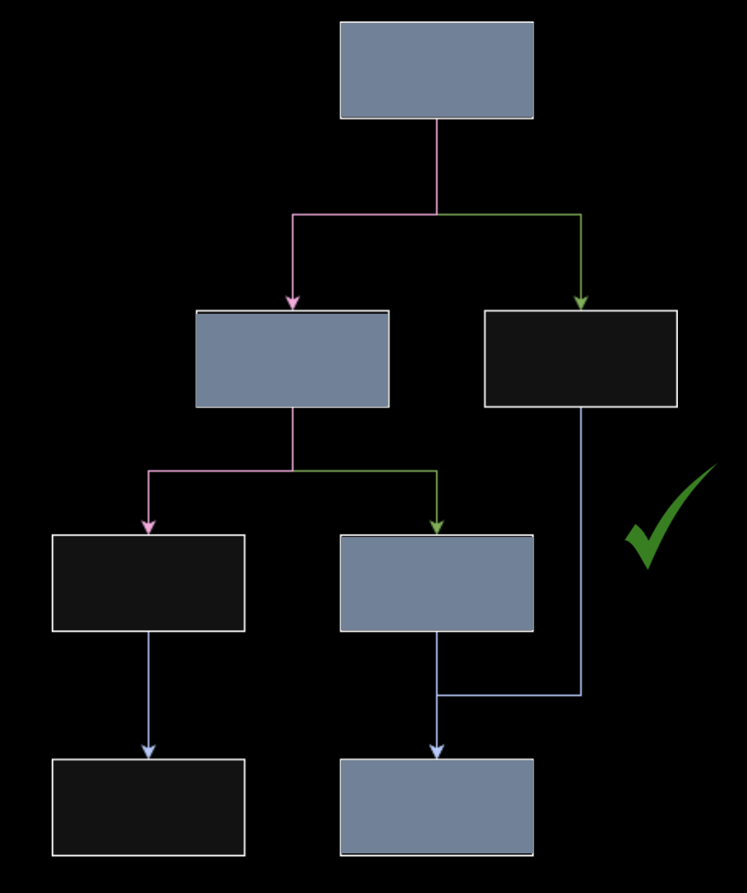
While multiple tests increase code coverage, they still follow predictable paths determined by the specific test inputs. This approach often misses edge cases that lurk in unexplored execution paths.
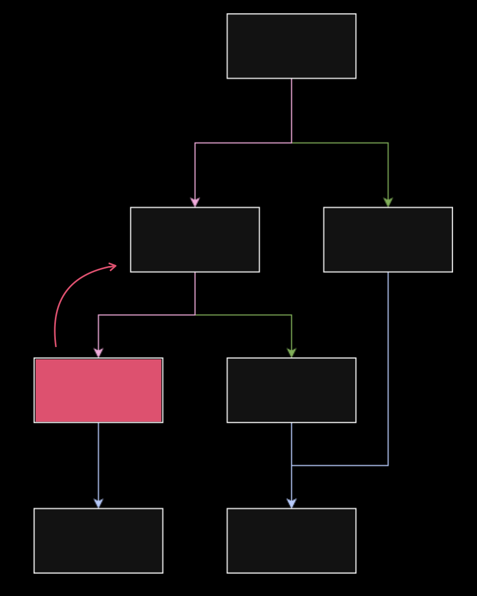
Consider a scenario where a bug manifests in a specific basic block due to miscalculations caused by a previous block due to unexpected state changes.
Targeted Symbolic Execution
Radiant addresses this by enabling targeted basic block exploration. Following a bottom-up approach, instead of hoping random inputs will stumble upon problematic code paths, Radiant can explicitly target specific basic blocks to reach.
Target basic blocks can be selected through multiple approaches:
- Manual Analysis: Security auditors identify suspicious code patterns and target those blocks directly
- Automated Approaches: Heuristics or static analysis tools identify potentially vulnerable blocks
- Hybrid Strategies: Automatically explore multiple targets while excluding regions of code that are known to be safe or irrelevant
Once a target basic block is selected, Radiant performs symbolic execution to discover the conditions needed to reach it:
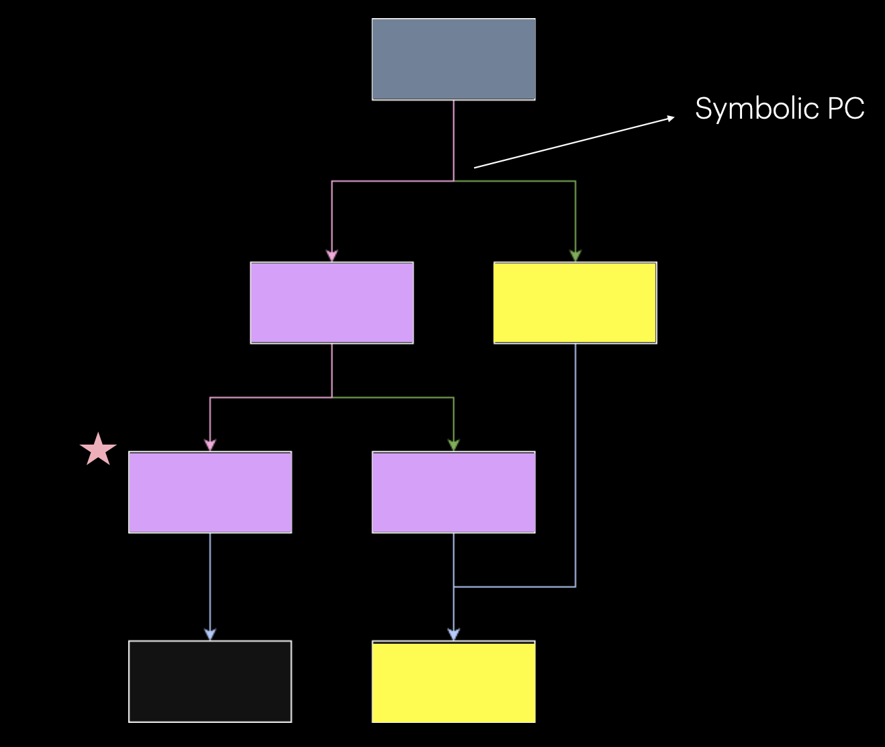
- Symbolic Variable Introduction: Radiant treats selected input fields and account states as symbolic variables rather than concrete values
- Path Exploration: As execution progresses, whenever a symbolic program counter (PC) is encountered, typically a branch instruction representing a conditional statement that depends on symbolic variables, the control flow diverges
- Parallel Path Analysis: Each divergent path is explored symbolically in parallel, building path constraints that capture the conditions required to reach each branch
- Target Achievement: When the symbolic execution reaches the target basic block, Radiant has accumulated all the path constraints necessary to reach that code
- Concretization: Finally, Radiant solves these constraints and concretizes the symbolic values, producing concrete input values that will deterministically trigger the target basic block
This is fundamentally how binary-level symbolic execution frameworks like angr and Manticore operate on traditional binaries.
These tools enable security researchers and developers to analyze complex execution paths, and generate concrete inputs that trigger specific code paths.
Architecture
Radiant's architecture consists of two parallel execution engines coordinated through a debugger bridge:
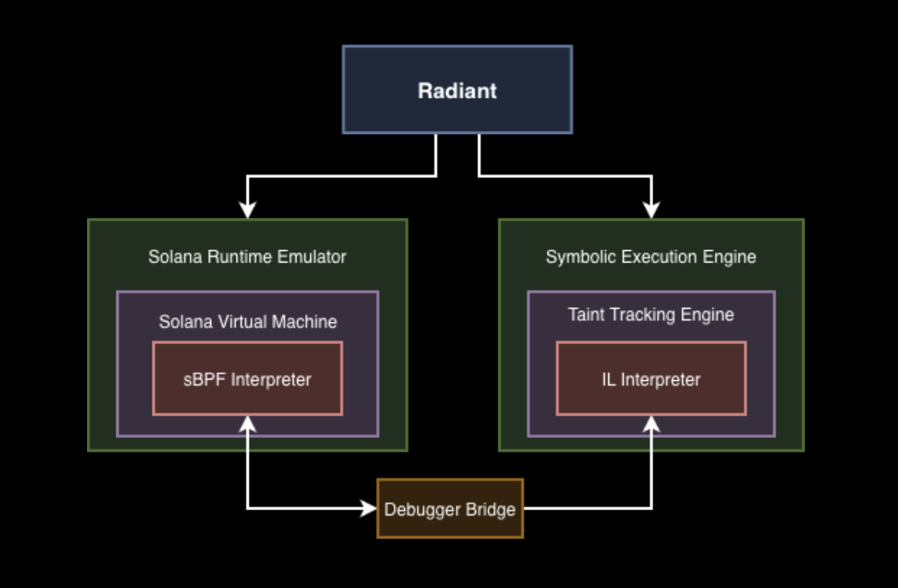
Solana Runtime Emulator
The left side of the architecture provides concrete execution through the Solana Runtime Emulator. Radiant leverages LiteSVM, a lightweight Solana Virtual Machine that executes programs in their native sBPF bytecode format. This component runs actual program instructions with concrete values while maintaining accurate runtime state, including account data, instruction context, and program execution flow.
Symbolic Execution Engine
The right side contains the Symbolic Execution Engine, built around a Taint Tracking Engine. This engine includes an IL Interpreter that operates on a lifted representation of the program.
Radiant is built on top of a modified version of radius2, a powerful symbolic execution framework that leverages radare2's ESIL as its intermediate language.
This work builds directly on our sBPF architecture contributions to radare2, which we developed specifically to enable advanced binary analysis for Solana programs. We presented this work at r2con 2025, showcasing the process of implementing sBPF support in radare2.
Debugger Bridge
The Debugger Bridge serves as the coordination layer between both engines, implemented through a GDB stub server integrated into a modified version of solana-sbpf. This implementation enables standard GDB Remote Serial Protocol communication between the Solana VM and the symbolic execution engine.
The bridge operates using a two-stage architecture:
- Deployment: Runs an instance of
LiteSVMwith an embedded GDB server listening for connections. - Symbolic Execution: Uses
radare2to attach to the GDB server, read concrete context from memory, and pass it toradius2for symbolic execution. This process repeats intermittently wheneverradius2needs additional concrete context.
Through the GDB protocol, Radiant can:
- Set breakpoints at specific program counter locations
- Control execution flow
- Read memory and register state on-demand
- Synchronize concrete execution with symbolic execution context
This dual-engine architecture enables concolic execution. The modified solana-sbpf runtime provides program and transaction concrete context through its GDB interface, while radare2 extracts this context and radius2 leverages it to build symbolic constraints necessary for path exploration.
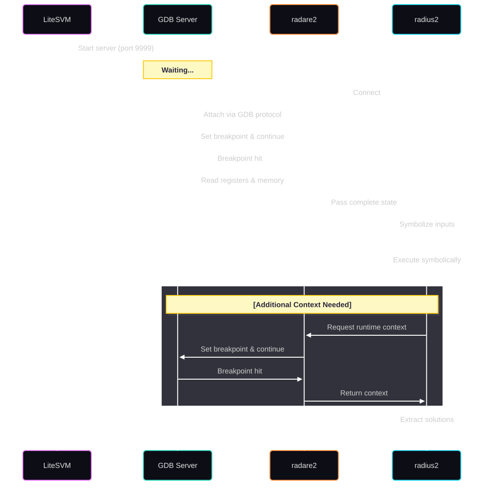
Ideally, symbolic execution would leverage compiler-based intermediate representations like LLVM IR, which provide well-defined semantics and strong tooling support. However, existing LLVM-based symbolic execution frameworks lack mature support for sBPF's ISA and SIMD extensions. Rather than building sBPF support from scratch in an LLVM-based framework, we chose to use ESIL from radare2, which already had the foundation for sBPF analysis through our prior contributions.
This choice required validation. We needed to ensure our ESIL instruction models accurately represent sBPF semantics. To achieve this, we leveraged the debugger bridge to implement a differential fuzzer that compared execution traces between the ESIL interpreter and live debugger sessions.
By fuzzing instructions and comparing their effects on registers and memory in both environments, we were able to validate with a reasonable degree of confidence, that our ESIL models correctly capture sBPF semantics, providing higher confidence in the symbolic execution results despite not using a compiler IR.
Example Walkthrough
Let's demonstrate Radiant with a practical example: discovering the exact input values that trigger a panic condition in a Solana program.
Note: This example uses a simplified program to clearly illustrate Radiant's symbolic execution capabilities. Real-world Solana programs involve significantly more complex logic, but the same methodology applies.
The Target Program
Consider the following Solana program:
#[program]
pub mod hello_world {
use super::*;
pub fn initialize_fn(ctx: Context<InitializeContext>, input: u8) -> Result<()> {
msg!(
"Hello World address: {}",
ctx.accounts.hello_world_account.key()
);
let hello_world_store = &mut ctx.accounts.hello_world_account;
hello_world_store.input = input;
if input > 200 && input < 210 {
panic!("This number is magic")
}
Ok(())
}
}The program accepts a u8 input parameter and panics only when the value falls within the narrow range of 201-209.
Understanding snapshot_pc and target_pc
Before running Radiant, we need to identify two critical program counter locations:
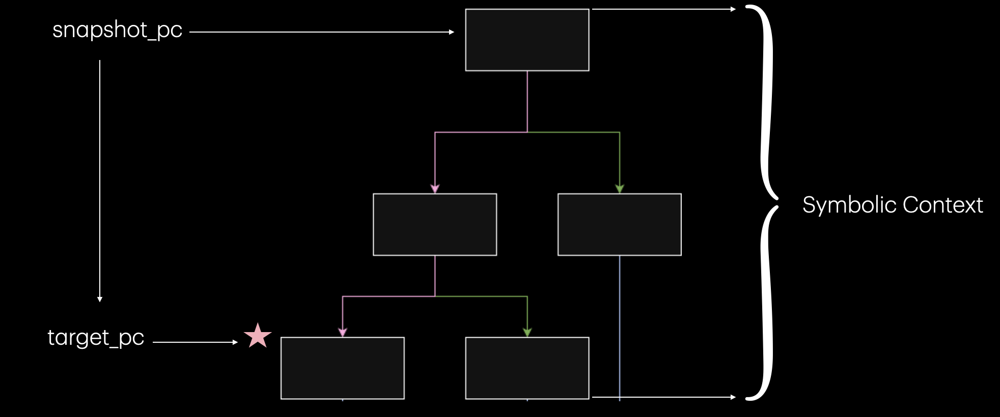
- snapshot_pc: The program counter where Radiant takes a snapshot of the program state and begins symbolic execution.
- target_pc: The specific basic block we want to reach, in this case, the panic statement.
Note: If
snapshot_pcis set to 0, Radiant will automatically populate this to the instruction function entry point or program entry point.
Radiant Test Configuration
The test setup involves two main components:
1. Radiant Test Configuration (tests/test.rs):
use radiant_test::*;
use std::collections::HashSet;
use crate::setup::*;
#[test]
fn test_example() -> Result<()> {
let snapshot_pc = 0x100007018;
let target_pc = 0x1000078d8;
let (config, deployment_thread) = setup::config(
snapshot_pc,
target_pc,
20,
true,
false
);
let mut test = RadiantTest::new(config)?;
let result = test.run(SymbolizeSpec::InstructionData {
length: 1
})?;
let solutions = result.into_bytes();
println!("\n[+] Found {} solutions", solutions.len());
for (i, sol) in solutions.iter().enumerate() {
let value = sol[0];
println!(" Solution #{}: {} (0x{:02x})", i + 1, value, value);
assert!(value > 200 && value < 210,
"Solution {} is outside valid range (201-209)", value);
}
Ok(())
}2. Program Deployment (src/deployment.rs):
pub fn call_initialize_fn(&mut self, input: u8) -> Result<()> {
println!("\n[*] Calling initialize_fn...");
let (hello_world_account_pda, _bump) = self.deployed.find_pda(&[b"hello_world_seed"]);
let mut data = vec![0x12, 0xbb, 0xa9, 0xd5, 0x5e, 0xb4, 0x56, 0x98];
data.push(0u8);
let instruction = Instruction {
program_id: self.deployed.program_id,
accounts: vec![
AccountMeta::new(self.deployed.payer_pubkey(), true),
AccountMeta::new(hello_world_account_pda, false),
AccountMeta::new_readonly(system_program::ID, false),
],
data,
};
let recent_blockhash = self.deployed.svm.inner.latest_blockhash();
let message = Message::new(&[instruction], Some(&self.deployed.payer_pubkey()));
let tx = Transaction::new(&[&self.deployed.payer], message, recent_blockhash);
self.deployed.enable_debug();
match self.deployed.svm.inner.send_transaction(tx) {
Ok(result) => {
println!("[+] initialize_fn successful!");
for log in &result.logs {
println!(" {}", log);
}
Ok(())
}
Err(e) => Err(anyhow::anyhow!("initialize_fn failed: {:?}", e)),
}
}Binary Analysis with radare2
Finding the correct snapshot_pc and target_pc values requires binary-level analysis. We extended radare2 to support sBPF architecture:
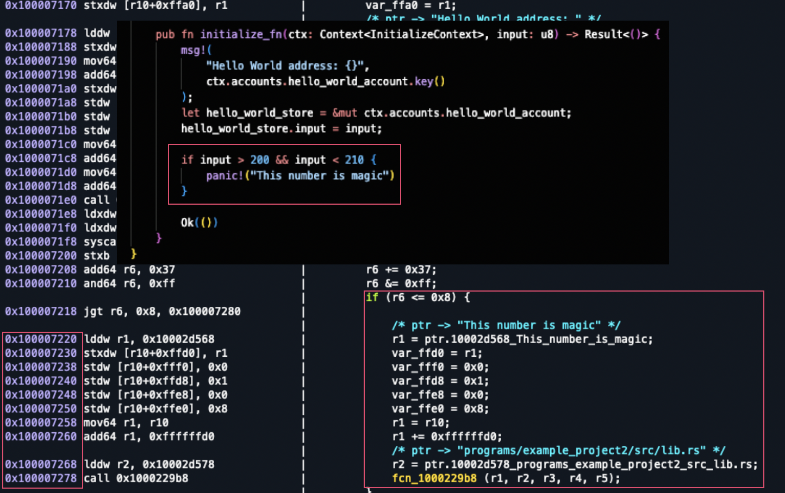
The screenshot demonstrates:
- Left panel: sBPF disassembly showing bytecode instructions
- Right panel: IL representation with aggregated Rust source strings
Demo
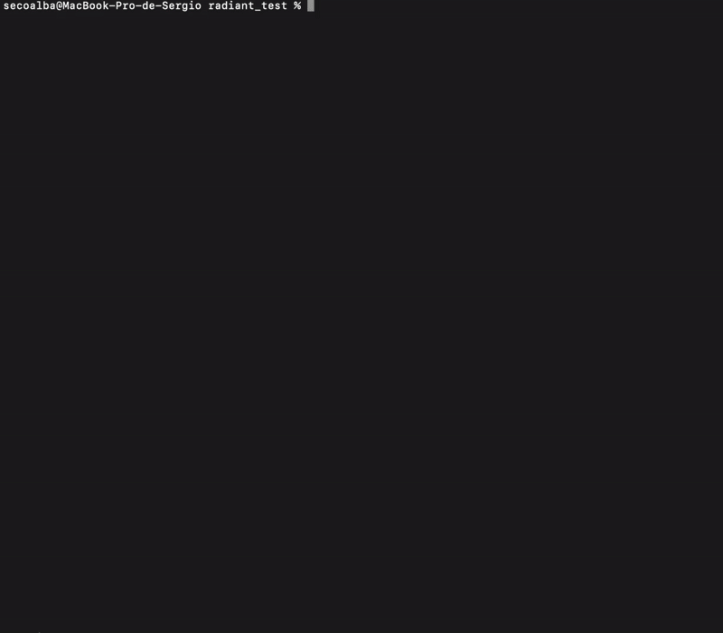
The demo above shows Radiant discovering all input values in the range 201-209 that trigger the panic condition.
Results
When executed, Radiant outputs:
[+] Found 9 solutions
Solution #1: 201 (0xc9)
Solution #2: 202 (0xca)
Solution #3: 203 (0xcb)
Solution #4: 204 (0xcc)
Solution #5: 205 (0xcd)
Solution #6: 206 (0xce)
Solution #7: 207 (0xcf)
Solution #8: 208 (0xd0)
Solution #9: 209 (0xd1)Radiant has systematically identified all nine values that satisfy the constraint.
Cross-CPI Concolic Execution
One of Radiant's advanced capabilities is cross-program invocation (CPI) concolic execution.
Note: The following example uses a simplified two-program interaction to demonstrate the cross-CPI technique.
Targeting Code Reachable Only via CPI
Consider a scenario where your target basic block exists in a callee program but can only be reached through a caller program's CPI invocation:
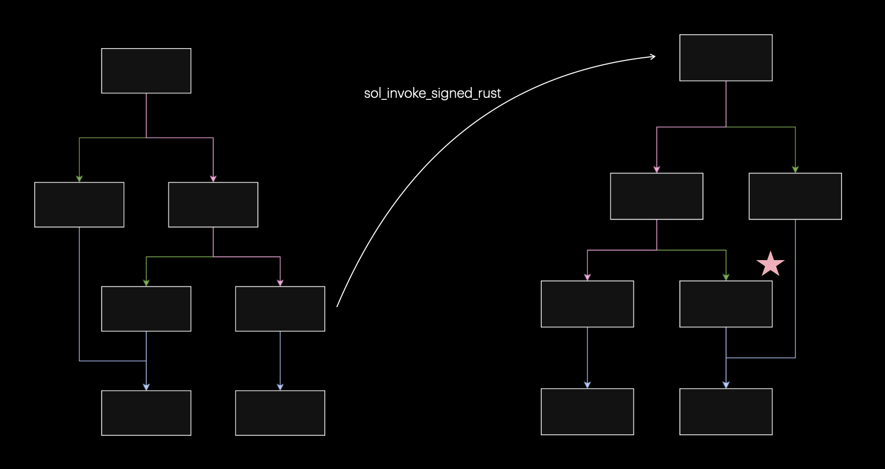
Example
Callee Program (cpi_callee):
#[program]
pub mod cpi_callee {
use super::*;
pub fn increment(ctx: Context<Modify>, amount: u64) -> Result<()> {
let counter = &mut ctx.accounts.counter;
require!(
counter.authority == ctx.accounts.authority.key(),
ErrorCode::Unauthorized
);
if amount >= 660 && amount < 666 {
panic!("TARGET REACHED: amount falls in bounds");
}
if amount >= 666 && amount < 700 {
panic!("TARGET REACHED: amount falls in bounds 2");
}
counter.count = counter.count.checked_add(amount)
.ok_or(ErrorCode::Overflow)?;
counter.operation_count += 1;
msg!("Counter incremented by {}. New value: {}", amount, counter.count);
Ok(())
}
}Caller Program (cpi_caller):
#[program]
pub mod cpi_caller {
use super::*;
pub fn cpi_increment_counter(
ctx: Context<CpiModifyCounter>,
amount: u64,
) -> Result<()> {
let transformed_amount = amount.checked_add(123).unwrap();
let cpi_program = ctx.accounts.callee_program.to_account_info();
let cpi_accounts = cpi_callee::cpi::accounts::Modify {
authority: ctx.accounts.authority.to_account_info(),
counter: ctx.accounts.counter.to_account_info(),
};
let cpi_ctx = CpiContext::new(cpi_program, cpi_accounts);
cpi_callee::cpi::increment(cpi_ctx, transformed_amount)?;
Ok(())
}
}Radiant's Cross-CPI Solution
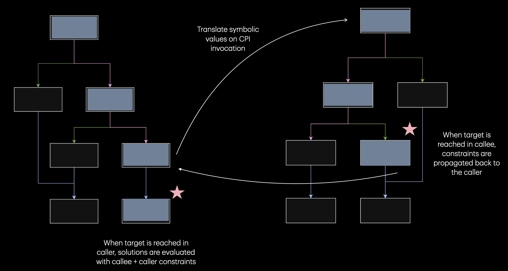
Radiant's cross-CPI concolic execution works by tracking symbolic values across program boundaries:
- Symbolic Value Propagation: When symbolic execution reaches a CPI invocation point in the caller, Radiant identifies the symbolic variables being passed as arguments.
- CPI Boundary Translation: At the
sol_invoke_signed_*boundary, Radiant translates the symbolic values from the caller's context into the callee's execution context. - Callee Exploration: Symbolic execution continues in the callee program.
- Constraint Propagation: When the target basic block is reached, constraints are propagated backward through the CPI boundary.
- Unified Constraint Solving: The constraint solver evaluates combined constraints from both programs.
Implementation
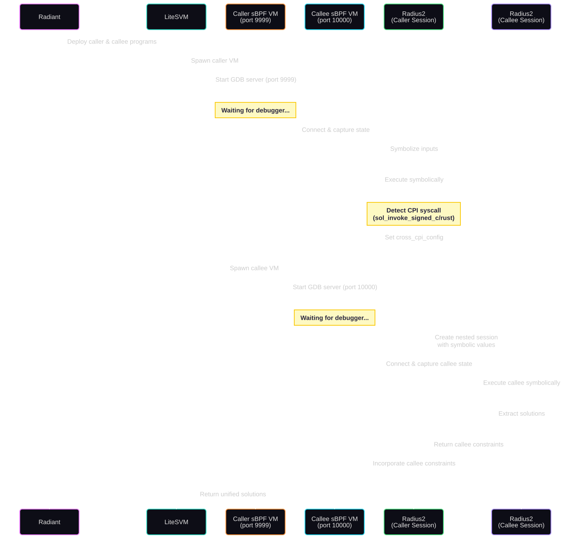
Both programs are deployed in the same LiteSVM instance. When the caller VM executes, a GDB server starts on port 9999. During symbolic execution, when radius2 detects the CPI syscall, a second VM instance is spawned for the callee with its own GDB server on port 10000.
Cross-CPI Test Configuration
#[test]
fn test_cross_cpi() -> Result<()> {
let ((caller_program_path, callee_program_path), deployment_thread) =
setup::setup_deployment();
let config = RadiantTestConfig::new(caller_program_path)
.cross_cpi_state(
0x100007ae0,
Some(0x100007d90),
0x100007c88,
0x100008bf8,
)
.callee_avoid(vec![])
.max_solutions(20)
.verbose(true);
let mut test = RadiantTest::new(config)?;
let result = test.run(SymbolizeSpec::InstructionData { length: 8 })?;
let solutions = result.into_bytes();
println!("\n[CROSS CPI] Found {} solutions", solutions.len());
for (i, sol) in solutions.iter().enumerate() {
if sol.len() >= 8 {
let amount = u64::from_le_bytes(sol[0..8].try_into().unwrap());
println!(" Solution #{}: amount = {} (0x{:x})", i + 1, amount, amount);
assert!(amount + 123 >= 666 && amount + 123 < 700,
"Callee solution {} is not in [666, 700)", amount);
}
}
Ok(())
}Cross-CPI Results
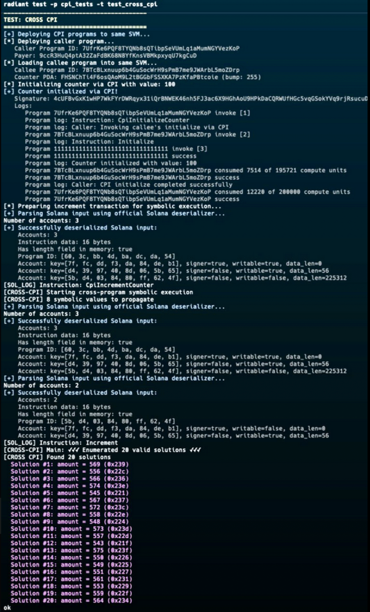
The output shows the complete cross-CPI analysis. The solutions include values like:
- Solution #1: amount = 569 (0x239), transforms to 692
- Solution #11: amount = 557 (0x22d), transforms to 680
- Solution #20: amount = 564 (0x234), transforms to 687
Additional Capabilities
- Solana Syscalls: Radiant handles Solana syscalls during symbolic execution.
- Cross-Transaction Composability: Symbolic solutions from one transaction can be used in subsequent transactions.
- Cross-CPI Symbolic Execution: Radiant consumes symbolic solutions with translated constraint contexts across CPI boundaries.
- Future Open Source: We plan to open-source Radiant once it reaches higher maturity.
Conclusion
Radiant brings concolic execution to Solana program security testing. By combining concrete and symbolic execution through its dual-engine architecture.
The framework's capabilities, from targeted basic block exploration to cross-CPI symbolic execution, address the unique challenges of analyzing composable Solana programs symbolically.
As Solana's ecosystem continues to grow in complexity, with protocols increasingly relying on multi-program interactions and intricate state machines, tools like Radiant become relevant for security research.
We're continuing to develop and refine Radiant, and we look forward to open-sourcing it in the future.